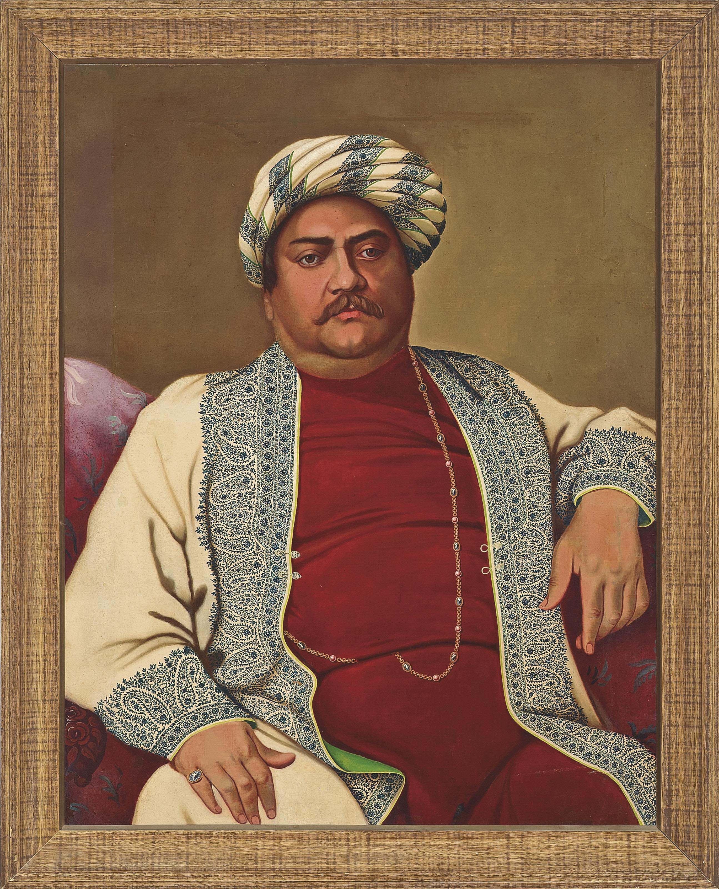
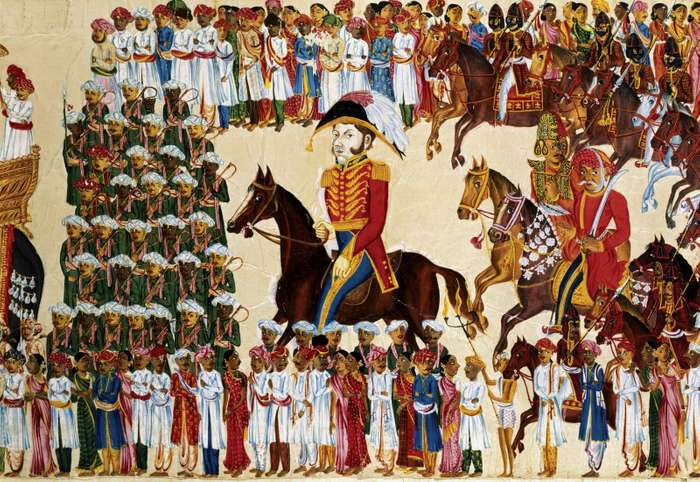

All Eyes on the East Indies
.jpg)
The establishment of the East India Company, also known by its longer official name of the Governor and Company of Merchants of London Trading into the East Indies, by royal charter in December 1600 was sparked mainly by the desire of British entities to assume trade control between European and Asian powers. In the charter as written and approved by Queen Elizabeth I, the East India Company gained a monopoly on all trade to the east of the Cape of Good Hope in Africa.
They did not, however, enter the region without competition: even prior to their established charter, the Dutch - in the form of the Verinigde Oost-Indische Compagnie - and the Compagnie des Indes of France had already established a presence in India. The EIC quickly gained prominence in the Indian market, of course, thanks to their infiltration of the zamindar network.
The Zeal of the Zamindars
The role of the “zamindar” dates back to the medieval years of India’s history and actually took on many variations - many of regal status - depending on the territory or ruler in question. During the Mughal Empire, though, and in relation to the EIC, the zamindars served as “land holders,” or intermediaries who were tasked with collecting the and rents from a cultivator who worked the land and delivering these funds to the Mughal emperor. These cultivators were forced to yield one-third of their profits to the emperor in exchange for the use of their land.
It was to these zamindars that the task of tax collection fell once the EIC took control in 1765 (when the Mughal Emperor transferred the rights to collect these taxes to British forces). The British called on these zamindars because they were already steeped in local laws. In fact, the EIC actually served as the zamindar for Calcutta and several other villages early on in their Indian tenure.
The Terror of Taxation

Some have suggested that this transition from collecting rents to collecting taxes perhaps contributed to the Great Bengal Famine of 1770, which resulted in the deaths of millions of Bengalis. While it is impossible to say with certainty whether this was the case, the zamindars were replaced in 1772 by the Board of Revenue as the hub of tax collection. Moves made by Lord Cornwallis in the late years of the 1790s granted zamindars the unprecedented ability to own the land they oversaw (prior to this point, they were not in legal possession of this land; it all belonged to the Empire). Revenue margins were also fixed, however, they were set at higher rates than previous years, which left many zamindars strapped to meet their tax obligations to the EIC.
The Indigo Rebellion

A strong illustration of the instability of this system revealed itself not long after with the rise of indigo dye: a trendy color of blue in European markets in the eighteenth century, the British wanted to use their Bengal resources to grow indigo crops, but Cornwallis’ strategy, known as “Permanent Settlement” (or the “Zamindari Settlement”), meant that they had to go through the local peasants to get the groups grown. They took cash advances to grow massive volumes of indigo, but when the demand for the product dropped precipitously in both the 1820s and 1840, peasant farmers suffered. The culmination of this discontent was the Indigo Rebellion in 1859, which resulted in the cessation of indigo crops on the subcontinent.
The End of the EIC Era
Well beyond the days of our zamindar, Arun, the EIC maintained a powerful presence in India until the later years of the eighteenth century, as closer oversight from Parliaments resulted in EIC’s slowly diminishing sway. It officially disappeared in 1857 following what is known as the Indian Mutiny or Indian Rebellion, which involved uprising and revolts across central and northern India. Though the British were able to quash the rebellion in June of the following year, the die was cast: by 1873, the EIC would be no more.
The legacy of the EIC would still be felt for years to come. According to the analysis of the Indian economy from 1858 and 1947 - a period known as the British Raj - Indian industry was no longer able to regain a full footprint within the global economy that had ballooned during the Industrial Revolution. The EIC’s draconian taxation and oversight had left India behind in the global marketplace with no clear path to regain forward progress.